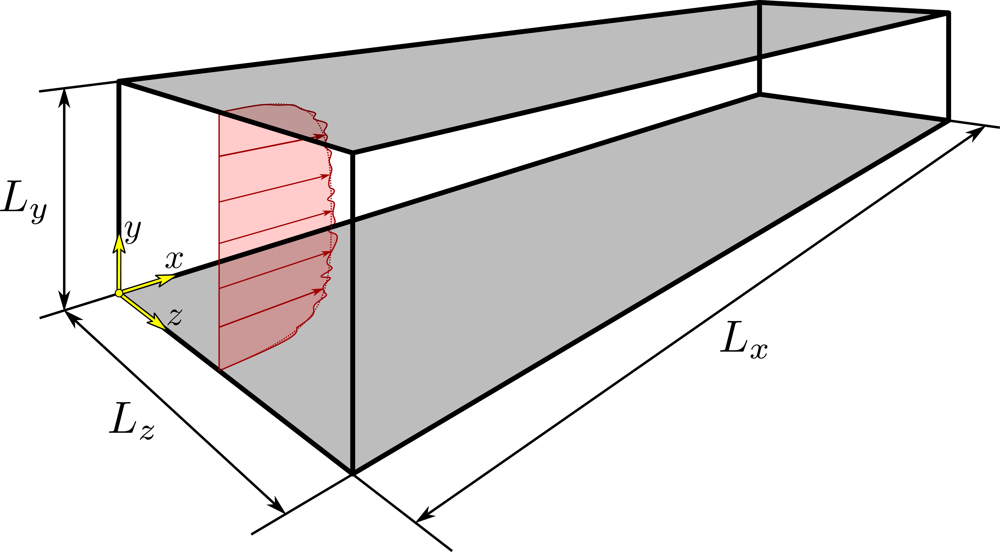
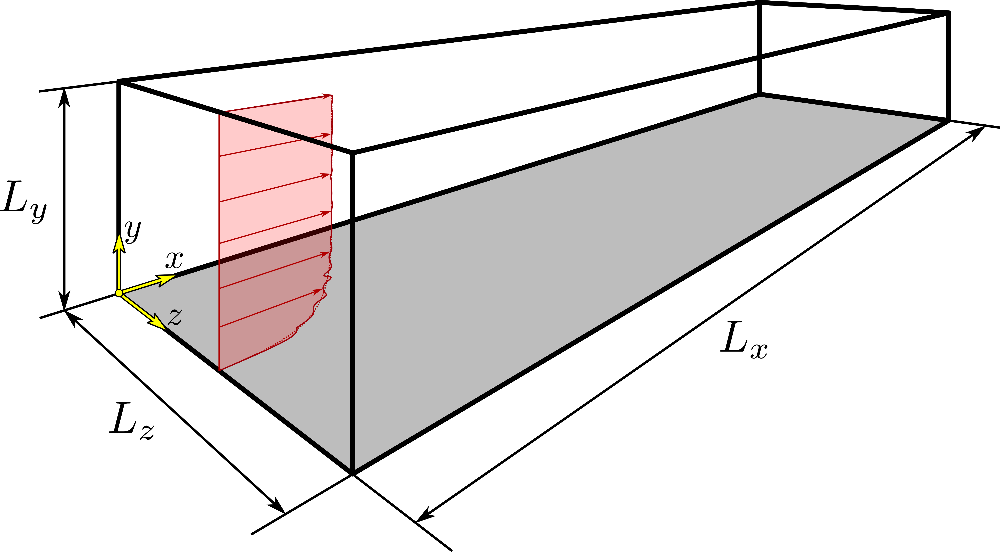

STREAmS – Cartesian flow cases
STREAmS has been tailored to carry out DNS of three types of canonical compressible flow configurations:
compressible plane channel flow,
compressible boundary layer over a flat plate,
shock wave/boundary layer interaction generated by oblique shock impingement.
Nondimensional governing equations
STREAmS solves the fully compressible Navier–Stokes equations for a calorically or thermally perfect, heat-conducting gas. The governing equations in dimensional form, adopting the Einstein summation notation, are thus:
where we indicate dimensional quantities with the asterisk symbol. In particular, \(\rho^*\) is the density, \(u_i^*\) is the velocity component in the i-th coordinate direction, \(p^*\) is the pressure, \(\sigma^*_{ij}\) is the viscous stress tensor, \(E^*\) is the total specific energy defined as \(E^* = e^* + u_i^* u_i^*/2\), \(H^*\) is the total specific enthalpy, defined as \(H^* = E^* + p^*/\rho^*\), and \(R^*\) is the gas constant.
For the general case of a thermally perfect gas, the specific internal energy and enthalpy are defined respectively as
where \(T_R^*\) is the reference temperature, and \(C_p^*\) and \(C_v^*\) are respectively the specific heat capacity at constant pressure and volume, which are assumed in general as functions of the temperature.
The constitutive equations defining the viscous stress tensor and the heat flux vector are:
where \(\mu^*\) is the dynamic viscosity, evaluated as a function of the temperature, and \(k^*\) is the thermal conductivity, expressed in terms of the molecular Prandtl number \(Pr\) as \(k^* = \mu^* C_p^*/Pr\).
For the viscosity-temperature relationship, two options are available:
with
where \(\alpha\) and \(S^*\) are coefficients that depend on the fluid.
In order to obtain the non-dimensional form of the governing equations, we define some reference quantities and write each dimensional quantity \(g^*\) as the product between its reference quantity \(g^*_R\) and its non-dimensional value \(g\), i.e.,
The specific choice of the reference quantities here assumed makes it possible to use non-dimensional variables, while retaining the same form of the dimensional governing equations.
We start by assuming a minimal set of four independent (“primary”) variables, namely the specific gas constant \(R^*\), a reference density \(\rho_R^*\), temperature \(T_R^*\) and length \(L_R^*\):
\(R^*\) |
\(\rho^*_R\) |
\(T^*_R\) |
\(L^*_R\) |
Consequently, density, temperature, and lengths are made non-dimensional as:
and also:
In order to obtain non-dimensional governing equations formally equal to their dimensional counterpart, reference quantities for all the other variables are derived from the minimal set as follows:
\(p^*_R\) |
\(U^*_R\) |
\(t^*_R\) |
\(\mu^*_R\) |
|---|---|---|---|
\(\rho^*_R R^* T^*_R\) |
\(\sqrt{R^* T^*_R}\) |
\(L^*_R/U^*_R\) |
\(\rho^*_R U^*_R L^*_R\) |
implying that \(p = p^*/p^*_R\), and \(u_i = u_i^*/U_R^*\), \(t = t^*/t^*_R\), \(\mu = \mu^*/\mu^*_R\).
Note that the reference velocity \(U_R^*\) is equal to the speed of sound evaluated at the reference temperature, except for the factor \(\sqrt{\gamma}\).
By substituting the above expressions in the governing equations and constitutive relations, it is possible to obtain the following non-dimensional form:
where
and
The non-dimensional form of the viscosity-temperature relationship becomes
We stress that the dynamic viscosity at the reference temperature \(\mu^*(T^* = T_R^*)\) does not coincide with the reference dynamic viscosity \(\mu_R^*\). Their ratio, i.e. the non-dimensional viscosity \(\mu\) at \(T = 1\), is a function of the non-dimensional flow parameters provided by the user in the input file (Mach number, Reynolds number, Eckert number), whose specific meaning for the various flow cases implemented in STREAmS is presented below.
For all the flow cases, \(x\) indicates the streamwise coordinate, \(y\) indicates the wall-normal coordinate, and \(z\) indicates the spanwise coordinate. The dimensions of the computational domain in the corresponding directions are \(L_x\), \(L_y\), and \(L_z\). A description of the specific setup adopted for the various flow cases is reported in the following.
Compressible plane channel flow
{kind=link}
The height of the computational domain is equal to \(2\,h^*\), where \(h^*\) thus indicates the half-height of the channel.
Bulk quantites are indicated with \(B\) subscript and are defined as:
bulk density
bulk velocity
bulk temperature
where \(V^*\) is the volume of the computational domain, \(\rho^*\) is the density, \(u^*\) is the streamwise velocity, and \(T^*\) is the temperature.
Relevant non-dimensional parameters for the compressible channel flow case are:
friction Reynolds number
bulk Reynolds number based on the bulk temperature
bulk Reynolds number based on the wall temperature
bulk Mach number based on the bulk temperature
bulk Mach number based on the wall temperature
non-dimensional temperature
where \(u^*_\tau\) is the friction velocity, \(\nu^*_w\) is the kinematic viscosity at the wall, \(\mu^*(T^*)\) is the dynamic viscosity at temperature \(T^*\), \(T^*_w\) is the wall temperature, \(\gamma = C^*_p/C^*_v\) is the heat capacity ratio, and \(T^*_r\) is the recovery temperature, defined as
\(r = Pr^{1/3}\) being the recovery factor.
For channel flow computations, the primary reference quantities are:
\(R^*\) |
\(\rho^*_R\) |
\(T^*_R\) |
\(L^*_R\) |
|---|---|---|---|
\(R^*\) |
\(\rho_B^*\) |
\(T_w^*\) |
\(h^*\) |
The other reference quantities are derived as explained in the previous section. Note that, as a consequence of this choice, the non-dimensional bulk velocity is not equal to one, but rather:
Furthermore, the non dimensional viscosity at the reference temperature is:
Simulations of the compressible plane channel flow are carried out imposing a constant flow rate, implying that both the bulk density and velocity are constant in time. Furthermore, the wall temperature is constant during the simulation.
For what concerns the bulk temperature, STREAmS can run channel flow simulations according to two possible options (see input section):
– Freely-evolving bulk temperature. This classic setup, see [2] and [9], corresponds to the case of a channel where the bulk temperature continuously increases up to the achievement of balance between aerodynamic heating and wall heat transfer. In this case, the user must supply the code with the desired values of \(M_B^w\) and an estimate of the friction Reynolds number \(Re_\tau\) in the input file.
– Fixed bulk temperature. In this case, see [10], the bulk temperature is kept constant in time thanks to the use of a bulk cooling term added to the total energy equation. The user must supply the code with the desired values of \(M_B\), \(\Theta\) and an estimate of the friction Reynolds number \(Re_\tau\) in the input file.
Compressible boundary layer
{kind=link}
STREAmS allows the user to perform simulations of a spatially evolving zero-pressure-gradient turbulent boundary layer.
Relevant non-dimensional parameters for the compressible boundary layer are:
friction Reynolds number
Reynolds number based on the boundary layer thickness and the free-stream viscosity
Reynolds number based on the momentum thickness and the wall viscosity
Reynolds number based on the momentum thickness and the free-stream viscosity
free-stream Mach number
non-dimensional temperature
Eckert number
where \(u_\tau^*\) is the friction velocity, \(\delta_0^*\) is the boundary layer thickness (based on 99% of the free-stream velocity) at the inflow, \(\theta_0^*\) is the boundary layer momentum thickness at the inflow, \(\nu_w^*\) and \(\mu^*_w\) are the kinematic and dynamic viscosity at the wall respectively, \(T^*_r\) is the recovery temperature and the subscript \(\infty\) indicates that quantities are referred to free-stream conditions.
For boundary layer flow computations, the primary reference quantities are:
\(R^*\) |
\(\rho^*_R\) |
\(T^*_R\) |
\(L^*_R\) |
|---|---|---|---|
\(R^*\) |
\(\rho_\infty^*\) |
\(T_\infty^*\) |
\(\delta_0^*\) |
The other reference quantities are derived as explained in the first section. Note that, as a consequence of this choice, the non-dimensional free-stream velocity is not equal to one, but rather:
Furthermore, the non dimensional viscosity at the reference temperature is:
Shock wave/boundary layer interaction

Simulations of the shock wave/boundary layer interaction assume that an oblique shock wave from the top surface of the domain impinges on a boundary layer developing on the flat bottom surface.
The relevant non-dimensional parameters and primary reference quantities when simulating the SBLI flow case are the same of the boundary layer flow case. In addition to these, in order to define the shock system, the user must provide also the two following parameters:
the shock impingment location \(x_{imp}^s\), which is the longitudinal coordinate where the impinging shock would intersect the bottom surface.
The shock wave angle \(\phi^s\), which is the acute angle between the shock and the top (or bottom) surface.